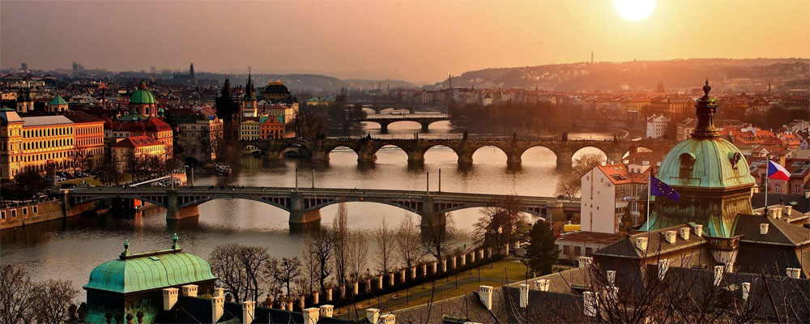
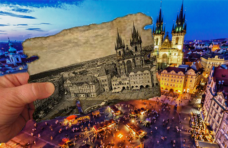
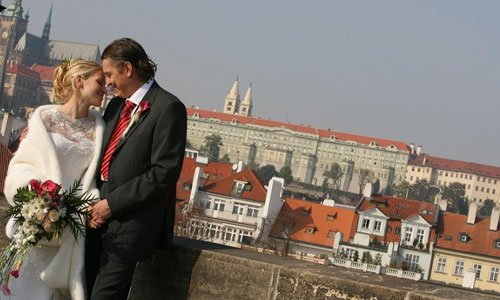
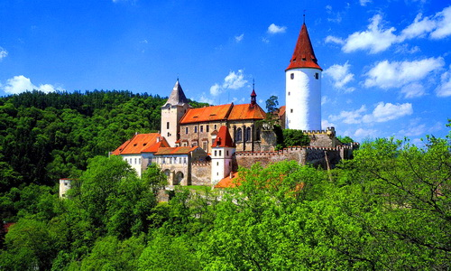

Свадьба в Чехии
Чехия — страна, манящая своей таинственностью, грацией, величием, готичностью и в тоже время благородством. Чехия привлекает тех, кто готов насладиться ее превосходной архитектурой, создающей особую атмосферу загадочности и многозначительности, где узкие улочки погружают в состояние единства, гармонии и умиротворения, а масштабные площади и неиссякаемое количество замков и мостов заставляют затаить дыхание и насладиться моментом.
Чехия уникальна своей многогранностью и многоликостью, в ней прекрасно перекликаются, как архитектурные памятники разных эпох, так и величественные сады с прекрасными цветами и раскидистыми деревьями сквозь которые едва различны виднеются благородные мосты.
Подробнее...Плюсы проведения свадьбы в Чехии:
Безусловными плюсами организации свадьбы в Чехии являются ее бюджетность и признание брака, заключенного в Чехии, во всем мире. Более того, Чехия предоставляет возможность сыграть свадьбу практически в любом замке страны, что позволяет реализовать самые смелые свои желания, а также удобное географическое расположение страны позволяет без проблем добраться в любую точку земного шара.
Время в пути: В среднем время полета составляет 2,5 часа.
Места для проведения свадьбы:
Столица Чехии обладает многочисленными возможностями для проведения свадебных церемоний. В Праге свадебную церемонию можно организовать в самом главном символе города — Староместской ратуше, величественность которой сохраняет в себе историю самых важных событий страны. Поднявшись наверх главной башни перед влюбленными открывается потрясающий вид на город, в то время как живая органная музыка будет сопровождать церемонию бракосочетания. Замок Троя, Либень, Пругонице — поистине роскошные места для проведения свадьбы. Потрясающая архитектура, безупречные сады, роскошь залов — всё это станет неотъемлимой составляющей вашего праздника.
Богатая замками разнообразной архитектуры Чехия дает возможность сыграть свадьбу и за пределами столицы: замок Карлштейн, замок Кривоклат, замок Добриш — это самая малая доля вариантов, где можно провести свой свадебный день, ведь для влюбленных пар нет ограничений в выборе, а мы с легкостью сможем подобрать для этого лучшее место.